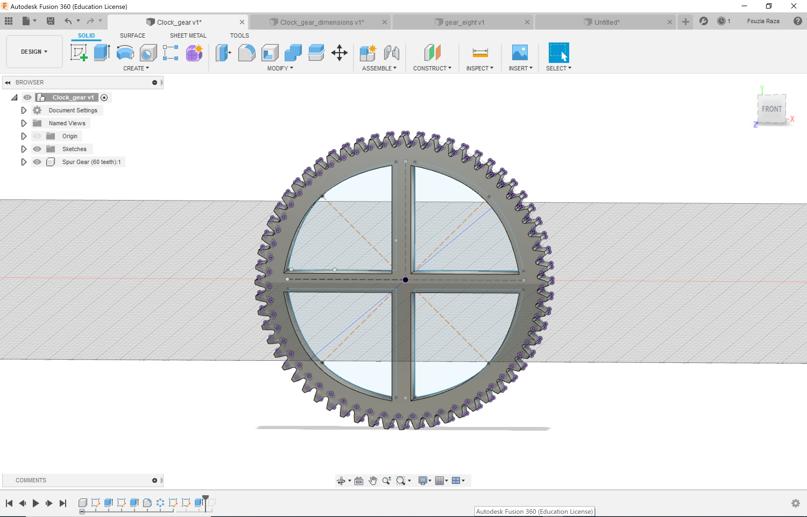

Using Fusion 360, I created the spur gears -- four large ones for the clock faces and three smaller driving gears. Using the add-ins feature, I created the larger spur gears by setting the following parameters:
Pressure angle: 20 degrees
Module: 2.0
Fillet radius: 0.5
Gear thickness: 12.70 mm
Number of teeth: 60
Pitch diamter: 120.00 mm
For the smaller gears, I used the following parameters:
Pressure angle: 20 degrees
Module: 1.0
Fillet radius: 0.3
Gear thickness: 12.70 mm
Number of teeth: 8, 7 or 10
Pitch diamter: 35.00 mm

For stylistic purposes, I sketched windows into the gears using the line and mirror tools to make symmetrical cutouts around the construction lines marking the diameters of the gears.
I then extruded the cutouts of my sketch and subtracted them from my gears. I did this with all of the larger gears and sped up the process by creating variables in my parameter space and chagning the dimensions for the different sizes.

I then transferred the gears onto Illustrator and created the stand using the pen tool. To keep consistent with the Genesis clock design, I designed the shape of the stand to be quite similar to the original to allow for consistent gear and stand ratios. The merging of the files was a bit painful since Illustrator was not reading my STL file properly but thanks to Victoria, I was able to copy over my design by first making it into an image through Inkscape and then exporting the outlines. I first eyeballed the size of the gears before taking the measurements of the versions docummented online. This turned out be pretty accurate but all of it was done in Illustrator -- stick to Fusion kids, it's more accurate and a lot easier to use once you get the hang of it.
The gear ratios that were used: 7:60, 2:15, 1:6 with the first driving the second hand gear, the second driving the minute gear and the last rotating the hour gear.